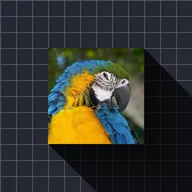

Lange schaduw

Werpt lange, evenwijdige schaduwen vanuit de dekkende delen van de laag.
Instellingen
| Instelling | Type | Bereik | Standaard |
|---|---|---|---|
| Hoek | Hoek | -3600° tot 3600° | 45° |
| Lengte | Getal | 0 tot 4000 | 300 |
| Kleur | Kleur | – | #000000 |
| Alfa | Getal | 0% tot 100% | 60% |
| Uitfaden | Getal | 0% tot 100% | 50% |
| Stevigheid | Getal | 0 tot 1 | 1 |
| Vulling | Getal | 0% tot 100% | 100% |
| Samples | Getal | 8 tot 512 | 64 |